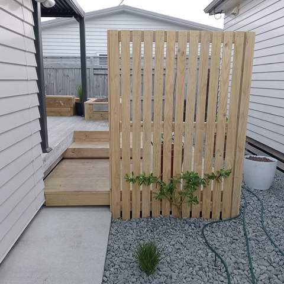

Tauranga Landscaping, Retaining Walls & Ready Lawns
Retaining walls, ready lawn, irrigation, decks and fencing across Tauranga and the Western Bay of Plenty. Owner-operated by Matt, who has been landscaping since 2012.
- Landscaping since 2012
- Owner-operated
- Tauranga & Western Bay
- Free quotes
What we build
Most outdoor projects are a mix: a wall to level the section, irrigation laid before the turf, a deck to finish it off. Straight Line does all six, so the pieces fit together.

Retaining walls
Timber and block walls that turn a sloping section into usable, level ground, with proper drainage behind them.
Retaining walls in Tauranga
Ready lawn
Instant turf laid on a levelled, well-prepared base, so the lawn takes and stays even.
Ready lawn in Tauranga
Irrigation systems
Pop-up sprinklers for lawns, drip line for gardens and a controller that runs it for you.
Irrigation in Tauranga
Decks & decking
Pine, hardwood and composite decks, with steps, planter boxes and screens built in.
Decks in Tauranga
Fencing & screens
Timber boundary fences, slat privacy screens and gates, set out on a string line.
Fencing in Tauranga
Landscaping & gardens
Full makeovers and new-build sections: earthworks, planting, edging, paths and the finishing touches.
Landscaping in TaurangaStraight answers, straight lines
The name is the standard: walls that are level, fences that run true, lawns without dips, and a clear quote before anything starts.
You deal with Matt
Straight Line is owner-operated. The person who quotes your job is the person responsible for it, from site visit to handover.
Landscaping since 2012
More than a decade of hands-on landscaping, from earthworks and retaining through to decks, lawns and planting.
Free, itemised quotes
A written quote that breaks the job down, so you can see what you are paying for and compare options like timber or block.
Built in the right order
Walls, drainage and irrigation go in before turf, decking and planting, so nothing finished gets dug up again.
Recent projects around Tauranga
Real photos from Matt's jobs: decks with built-in planters, timber retaining, new lawns and finished gardens.

Deck with raised timber planter box under a black pergola 
New pine deck surrounded by tropical planting 
Black feature posts with horizontal rods, planting and gravel strip along a white wall 
Concrete patio with round table, lawn and timber planter beds along the fence 
Large pine deck in a fenced garden with a spa pool 
Deck steps and timber planter with grasses under a pergola 
Lawn with metal edging, mulched beds, a young tree and a row of standard trees along a fence 
Stained deck with timber balustrade next to artificial turf
How we work
A simple, four-step process from first call to final tidy-up.
Enquiry
Call or text Matt on 020 4006 6910, or send the quote form. A few photos of the area help.
Site visit & itemised quote
Matt comes out, measures up and talks through options, then sends a written quote broken down by item.
Build
Work is done in the right order (earthworks, walls and drainage, irrigation, then turf, decking and planting).
Tidy handover
The site is cleaned up and you get a walk-through, plus care tips such as a watering plan for new lawn.
Landscaping across Tauranga & the Western Bay
Based in Tauranga and working from the Mount and Papamoa out to Te Puna, Omokoroa, Katikati and Te Puke.
Mount Maunganui & Papamoa
- Mount Maunganui
- Papamoa
Tauranga west & north
- Bethlehem
- Otumoetai
- Matua
- Brookfield
Tauranga south
- Greerton
- Pyes Pa
- Tauriko
- Welcome Bay
- Ohauiti
Western Bay of Plenty
- Te Puna
- Omokoroa
- Katikati
- Te Puke
What clients say
Once Straight Line Landscaping's Google Business Profile is set up, real reviews from local clients (first name and suburb) will show in this spot, with a link through to Google.
Ready to sort out your section?
Tell Matt what you have in mind. Quotes are free and there is no obligation.